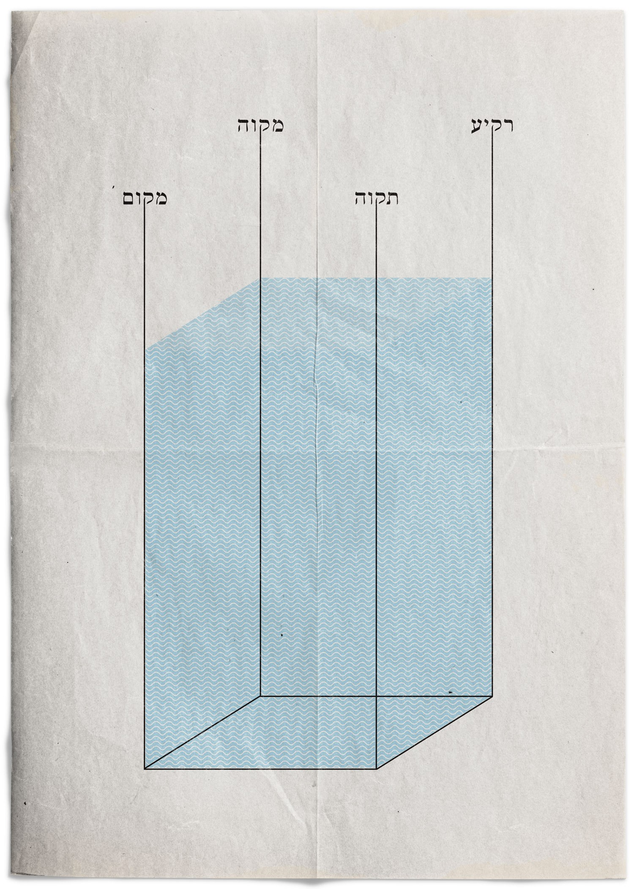
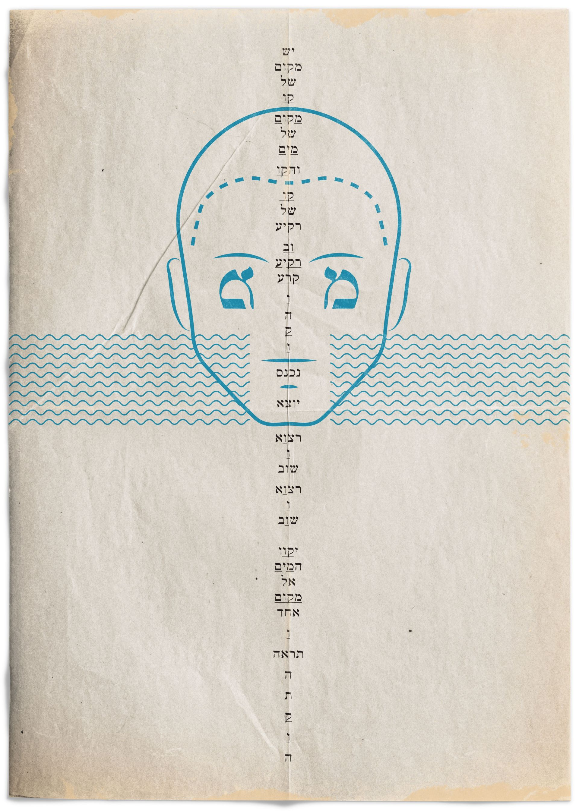
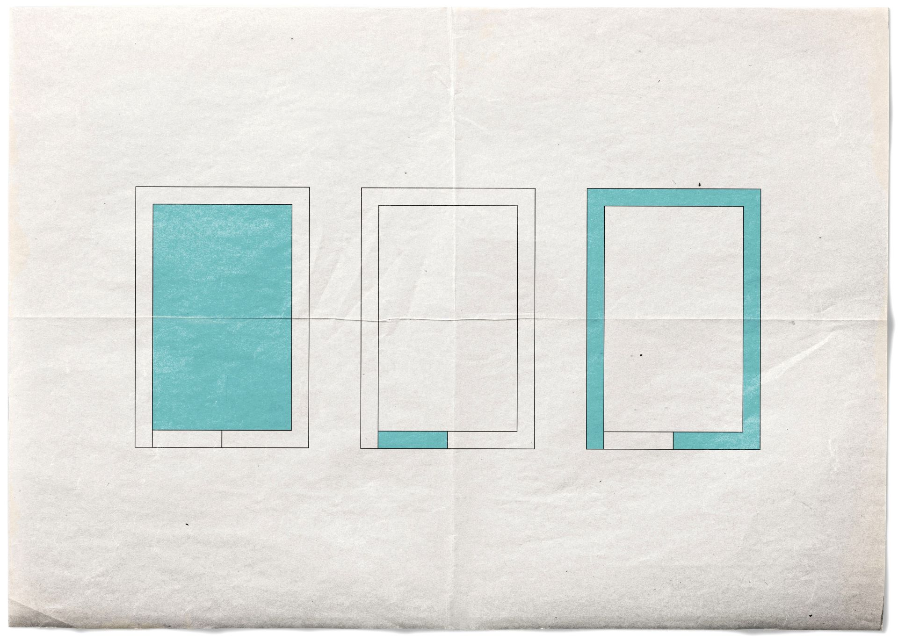

"וַיֹּאמֶר אֱלֹהִים יִקָּווּ הַמַּיִם מִתַּחַת הַשָּׁמַיִם אֶל מָקוֹם אֶחָד וְתֵרָאֶה הַיַּבָּשָׁה" (בראשית א ט) מקבץ היצירות הם חלק מסדרת עבודות בטכניקות שונות של האומן אריק וייס המביאות את סיפור קוד "המים". "בְּרֵאשִׁית בָּרָא אֱלֹהִים אֵת הַשָּׁמַיִם וְאֵת הָאָרֶץ. וְהָאָרֶץ הָיְתָה תֹהוּ וָבֹהוּ, וְחֹשֶׁךְ עַל־פְּנֵי תְהוֹם, וְרוּחַ אֱלֹהִים מְרַחֶפֶת עַל־פְּנֵי הַמָּיִם." (בראשית א; א)

כבר בפסוקים הראשונים של ספר בראשית מתברר סוד מופלא. אלוהים בורא את השמיים ואת הארץ אבל המים היו כבר מקודם, מלפני "בראשית". אז מה הם המים? חומר? רוח? שפע אין־סופי? כמים כן התשובות, זורמות לאין־סוף. אך אם ננסה להבין את כלי קיבולת המים נוכל ללמוד איך לאגור יותר ויותר מהם ולזכות בזרם של שפע אין־סופי.
מים - אותיות המים מורכבות מ- מ י מ - וקריאה מימין לשמאל או משמאל לימין תלמדנו שהם שלמים בעצמם מכל צד. גם ה־ים המוגדר בעולמנו כמכל הקיבול הגדול ביותר למים, נמצא בתוך המילה מימינה ומשמאלה, דבר שמחזק את ההבנה שהמים מכילים בתוכם גם את השפע וגם את הכלי המקבל אותם. אי אפשר שלא להתייחס לדמיון בין - מ י מ - לנוסחת המים - H2O פעמיים מ"ם (H) ובאמצעותם יו"ד (O).
כמו כן, שם האות מ"ם מורכב משתי אותיות מ׳, כאשר התנועה בתוכו היא אין־סופית. כשמוסיפים את האות יו"ד ש"מרחפת על פני המים" (האות היחידה בעברית שמרחפת מעל קו האותיות) נוצר משהו אין־סופי ביסודו הרוחני.
הצינור המוביל את המים - ה"קו", ה־ו' היא האות בעברית שנראית כמו קו ומשמשת גם כ־ו' החיבור. הקו הנמצא במקווה במקום בתקווה ודרכו עוברת ה־י' למילוי הכלי. כשבתחילה "יִקָּווּ הַמַּיִם מִתַּחַת הַשָּׁמַיִם אֶל מָקוֹם אֶחָד" כמו שאומר הפסוק, ותראה היבשה (היעדר מים) ולאחר מכן, כשנוצרת היבשה ככלי, אפשר להזרים מחדש את המים לפי המקום האפשרי.
בעולמנו דברים מוגדרים באותיות, במילים. באופן רוחני, בזמן שאדם נכנס וטובל במים פיזיים הוא נכנס וטובל במים רוחניים, באותיות המילה - מ י ם - ובעצם ברמת תודעה גבוהה יותר, יכול האדם לטבול במילה מים ולקבל אליו את הערכים הנמצאים במים הפיזיים. העולם, ברובו הגדול עשוי ממים, ומה שלא, הוא בעצם היעדר של מים. גוף האדם מורכב ברובו ממים וכן מה שמחוצה לו. קוד המים עובד בצורה כזאת שכאשר אדם נכנס וטובל במים, המים שבתוכו מסתנכרנים עם המים שמחוצה לו ומתאחדים לאחד. כמעין כניסה מחדש לנוזל הרחם האין־סופי, שלאחריה פרידה ויציאה לעולם מחדש, וחוזר חלילה. מים זה חיים. מים זה מקום. מים זה תקווה.